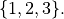
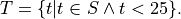
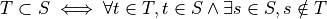
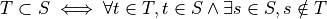
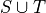
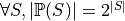

7. Set Theory¶
Modern mathematics is largely founded on set theory: in particular, on what is called Zermelo-Fraenkel set theory with the axiom of Choice, or ZFC. Every concept you have ever learned in mathematics can, in principle, be reduced to expresions involving sets. For example, every natural number can be represented as a set: zero as the empty set, {}; one as the set containing the empty set, {{}}; two as the set that contains that set, {{{}}}; ad infinitum.
Set theory includes the treatment of sets, including the special cases of relations (sets of tuples), functions (single-valued relations), sequences (functions from natural numbers to elements), and other such concepts. ZFC is a widely accepted formal foundation for modern mathematics: a set of axioms that describe properties of sets, from which all the rest of mathematics can be deduced.
Naive Set Theory¶
So what is a set? A naive definition (which will actually be good enough for our purposes and for most of practical computer science) is that a set is just an unordered collection of elements. In principle, these elements are themselves reducible to sets but we don’t need to think in such reductionist terms. We can think about a set of natural numbers, for example, without having to think of each number as itself being some weird kind of set.
In practice, we just think sets as unordered collections of elements of some kind, where any given element is either in or not in any given set. An object can be a member of many different sets, but can only by in any give set zero or one times. Membership is binary. So, for example, when we combine (take the union of) two sets, each of which contains some common element, the resulting combined set will have that element as a member, but it won’t have it twice.
This chapter introduces naive, which is to say intuitive and practical, set theory. It does not cover axiomatic set theory, in which every concept is ultimately reduced to a set of logical axioms that define what precisely it means to be a set and what operations can be use to manipulate sets.
Overly Naive Set Theory¶
Before we go on, however, we review a bit of history to understand that an overly naive view of sets can lead to logical contradictions that make such a theory useless as a foundation for mathematics.
One of the founders of modern logic, Gotlob Frege, had as his central aim to establish logical foundations for all of mathematics: to show that everything could be reduced to a set of axioms, or propositions accepted without question, from which all other mathematical truths could be deduced. The concept of a set was central to his effort. His logic therefore allowed one to define sets as collections of elements that satisfy given propositions, and to talk about whether any given element is in a particular set of not. Frege’s notion of sets, in turn, traced back to the work of Georg Cantor.
But then, boom! In 1903, the British analytical philosopher, Bertrand Russell, published a paper presenting a terrible paradox in Frege’s conception. Russell showed that a logic involving naive set theory would be inconsistent (self-contradicting) and there useless as a foundation for mathematics.
To see the problem, one consider the set, S, of all sets that do not
contain themselves. In set comprehension notation, we would write
this set as  That is, S is the
set of elements, a, each a set, such that a is not a member of
itself.
That is, S is the
set of elements, a, each a set, such that a is not a member of
itself.
Now ask the decisive question: Does S contain itself?
Let’s adopt a notation, C(S), to represent the proposition that S
contains itself. Now suppose that C(S) is true, i.e., that S does
contain itself. In this case, S, being a set that contains itself,
cannot be a member of S, because we just defined S to be the set
of sets that do not contain themselves. So, the assumption that S
contains itself leads to the conclusion that S does not contain
itself. In logical terms,  This is
a contradiction and thus a logical impossibility.
This is
a contradiction and thus a logical impossibility.
Now suppose S does not contain itself:  . Being
such a set, and given that S is the set of sets that do not contain
themselves, it must now be in S. So
. Being
such a set, and given that S is the set of sets that do not contain
themselves, it must now be in S. So  The assumption that it does not contain itself leads right
back to the conclusion that it does contain itself. Either the set
does or does not contain itself, but assuming either case leads to a
contradictory conclusion. All is lost!
The assumption that it does not contain itself leads right
back to the conclusion that it does contain itself. Either the set
does or does not contain itself, but assuming either case leads to a
contradictory conclusion. All is lost!
That such an internal self-contradiction can arise in such a simple way (or at all) is a complete disaster for any logic. The whole point of a logic is that it gives one a way to reason that is sound, which means that from true premises one can never reach a contradictory conclusion. If something that is impossible can be proved to be true in a given theory, then anything at all can be proved to be true, and the whole notion of truth just collapses into meaninglessness. As soon as Frege saw Russell’s Paradox, he knew that that was game over for his profound attempt to base mathematics on a logic grounded in his (Cantor’s) naive notion of sets.
Two solutions were eventually devised. Russell introduced a notion of types, as opposed to sets, per se, as a foundation for mathematics. The basic idea is that one can have elements of a certain type; then sets of elements of that type, forming a new type; then sets of sets elements of that type, forming yet another type; but one cannot even talk about a set containing (or not containing) itself, because sets can only contain elements of types lower in the type hierarchy.
The concept of types developed by Russell lead indirectly to modern type theory, which remains an area of very active exploration in both computer science and pure mathematics. Type theory is being explored as an alternative foundation for mathematics, and is at the very heart of a great deal of work going on in the areas of programming language design and formal software specification and verification.
On the other hand, Zermelo repaired the paradox by adjusting some of the axioms of set theory, to arrive at the starting point of what has become ZFC. When we work in set theory today, whether with a naive perspective or not, we are usually working in a set theory the logical basic of which is ZFC.
Sets¶
For our purposes, the naive notion of sets will be good enough. We will take a set to be an unordered finite or infinite collection of elements. An element is either in or not in a set, and can be in a set at most once. In this chapter, we will not encounter any of the bizarre issues that Russell and others had to consider at the start of the 20th century.
What we will find is that set-theoretical thinking is an incredibly powerful intellectual tool. It’s at the heart of program specification and verification, algorithm design and analysis, and theory of computing, among many other areas in computer science. Moreover, Dafny makes set theory not only fun but executable. The logic of Dafny, for writing assertions, pre- and post-conditions, and invariants is set theory, a first-order logic with sets and set-related operations as built-in concepts.
Set Theory Notations¶
Display notation¶
In everyday mathematical writing, and in Dafny, we denote small sets by listing the elements of the set within curly brace. If S is the set containing the numbers, one, two, and three, for example, we can write S as 
In Dafny, we would write almost the same thing.
var S:set<int> := { 1, 2, 3 };
This code introduces the variable, S, declares that its type is
finite set of integer (iset<T> being the type of infinite sets
of elements of tyep T), and assigns to S the set value,  Because the value on the right side of the assignment
operator, is evidently a set of integers, Dafny will infer the type of
S, and the explicit type declaration can therefore be omitted.
Because the value on the right side of the assignment
operator, is evidently a set of integers, Dafny will infer the type of
S, and the explicit type declaration can therefore be omitted.
var S := { 1, 2, 3 };
When a set is finite but too large to write down easily as a list of
elements, but when it has a regular structure, mathematicians often
denote such a set using an elipsis. For example, a set, S, of even
natural numbers from zero to one hundred could be written like this:
 This expression is a kind of
quasi-formal mathematics. It’s mostly formal but leaves details that
an educated person should be able to infer to the human reader.
This expression is a kind of
quasi-formal mathematics. It’s mostly formal but leaves details that
an educated person should be able to infer to the human reader.
It is not (currently) possible to write such expressions in Dafny. Dafny does not try to fill in missing details in specifications. A system that does do such a thing might make a good research project. On the other hand, ordinary mathematical writing as well as Dafny do have ways to precisely specify sets, including even infinite sets, in very concise ways, using what is called set comprehension or set builder notation.
Set comprehension notation¶
Take the example of the set, S, of even numbers from zero to one
hundred, inclusive. We can denote this set precisely in mathematical
writing as  Let’s pull this expression apart.
Let’s pull this expression apart.
The set expression (to the right of the first equals sign) can be read in three parts. The vertical bar is read such that. To the left of the bar is an expression identifying the set from which the elements of this set are drawn, and a name is given to an arbitrary element of this source set. So here we can say that S is a set each element n of which is a natural number. A name, here n, for an arbitrary element is given for two purposes. First it desribes the form of elements in the set being built: here just integers. Second, the name can then be used in writing a condition that must be true of each such element. That expression is written to the right of the vertical bar.
Here the condition is that each such element, n must be greater than or equal to zero, less than or equal to one hundred, and even, in that the remainder must be zero when n is divided by 2. The overall set comprehension expression is thus read literally as, S is the set of integers, n, such that n is greater than or equal to zero, n is less than or equal to 100, and n evenly divisible by 2. A more fluent reading would simply be S is the set of even integers between zero and one hundred inclusive.
Dafny supports set comprehension notations. This same set would be written as follows (we assume that the type of S has already been declared to be set<int>):
S := set s: int | 0 <= s <= 100;
Another way to define the same set in ordinary mathematical writing would use a slightly richer form of set comprehension notation. In particular, we can define the same set as the set of values of the expression 2*n for n is in the range zero to fifty, inclusive. Where it’s readily inferred, mathematicians will usually also leave out explicit type information. `S = { 2 * n | 0 <= n <= 50 }. In this expression it’s inferred that n ranges over all the natural numbers, these values are filtered by the expression on the right, and these filtered values are then fed through the expression on the left of the bar to produce the elements of the intended set.
Dafny also supports set comprehension notation in this style. To define this very same set in Dafny we could also write this:
S := set s: int | 0 <= s <= 50 :: 2 * s;
This command assigns to S a set of values, 2 * s,, where s ranges over the integers and satisfies the predicate (or filter) 0 <= s <= 50.
The collection of values from which element are drawn to be build into a new set need not just be a built-in type but can be another programmer-defined set. Given that S is the set of even numbers from zero to one hundred, we can define the subset of S of elements that are less than 25 by writing a richer set comprehension. In pure mathematical writing, we could write  That is, T is the set of elements that are in S and less than 25. The Dafny notation is a little different, but not too much:
var T := set t | t in S && t < 25;
This Dafny code defines T to be the set (of integers, but note that we let Dafny infer the type of t in this case), such that t is in the set S (that we just defined) and t is also less than 25.
As a final example, let’s suppose that we want to define the set of
all ordered pairs whose first elements are from S and whose second
elements are from T, as we’ve defined them here. For example, the
pair (76,24) would be in this set, but not (24 76). In ordinary
mathematical writing, this would be  This set is, as we’ll learn more about shortly, called the
product set of the sets, S and T.
This set is, as we’ll learn more about shortly, called the
product set of the sets, S and T.
In Danfy, this would be written like this:
var Q := set s, t | s in S && t in T :: (s, t);
This code assigns to the new variable, Q, a set formed by taking elements, s and t,, such that s is in S and t is in T, and forming the elements of the new set as tuples, (s, t). This is a far easier way to write code for a product set than by explicit iteration over the sets S and T!
In Dafny, the way to extract an element of a tuple, t, of arity, n, is by writing t.n, where n is a natural number in the range 0 up to n - 1. So, for example, (3, 4).1 evaluates to 4. It’s not a notation that is common to many programming languages. One can think of it as a kind of subscripting, but using a different notation than the usual square bracket subscripting used with sequences.
Set Operations¶
Cardinality¶
By the cardinality of a set, S, we mean the number of elements
in S. When S is finite, the cardinality of S is a natural number.
The cardinarily of the empty set is zero, for example, because it has
no (zero) elements. In ordinary mathematics, if S is a finite set,
then its cardinality is denoted  . With S defined as in
the preceding section, the cardinality of S is 50. (There are
50 numbers between 0 and 49, inclusive.)
. With S defined as in
the preceding section, the cardinality of S is 50. (There are
50 numbers between 0 and 49, inclusive.)
The Dafny notation for set cardinality is just the same. The following code will print the cardinality of S, namely 50, for example.
print |S|;
If a set is infinite in size, as for example is the set of natural numbers, the cardinality of the set is obviously not any natural number. One has entered the realm of transfinite numbers. We will discuss transfinite numbers later in this course. In Dafny, as you might expect, the cardinality operator is not defined for infinite sets (of type iset<T>).
Equality¶
Two sets are considered equal if and only if they contain exactly the same elements. To assert that sets S and T are equal in mathematical writing, we would write S = T. In Dafny, such an assertion would be written, S == T.
Subset¶
A set, T, can be said to be a subset of a set S if and only if
every element in T is also in S. In this case, mathematicians
write  . In mathematical logic notation, we would
write,
. In mathematical logic notation, we would
write,  . That is,
T is a subset of S if and only if every element in T is also in
S.
. That is,
T is a subset of S if and only if every element in T is also in
S.
A set T, is said to be a proper subset of S, if T is a subset of S but T is not equal to S. In our example, T (the set of even natural numbers less than 25) is a proper subset of S (the set of even natural numbers less than or equal to 100).
This is written in mathematics as  . In other words,
every element of T is in S but there is at least one element of
S that is not in T. Mathematically, .
. In other words,
every element of T is in S but there is at least one element of
S that is not in T. Mathematically, .
The backwards E is the existential quantifier in first-order logic, and is read as, and means, there exists. So this expression says that T is a proper subset of S if every t in T is in S but there is at least one s in S that is not in T. That the proper subset operator contains an implicit existential operator poses some real problems for verification.
Without getting into details, when one asserts in Dafny that T is a proper subset of S, Dafny needs to find an element of S that is not in T, and in general, it needs a lot of help to do that. The details are out of scope at this point, but one should be aware of the difficulty.
In Dafny, one uses the usual arithmetic less and less than or equal operator symbols, < and <=, to assert proper subset and subset relationships, respectively. The first two of the following assertions are thus both true in Dafny, but the third is not. That said, limitations in the Dafny verifier make it hard for Dafny to see the truth of such assertions without help. We will not discuss how to provide such help at this point.
assert T < S;
assert T <= S;
assert S <= T;
We note every set is a subset, but not a proper subset, of itself. It’s also the case that the empty set is a subset of every set, in that all elements in the empty set are in any other set, because there are none. In logic-speak, we’d say a universally quantified proposition over an empty set is trivially true.
If we reverse the operator, we get the notion of supersets and proper
supersets. If T is a subset of S, then S is a superset of T,
written,  . If T is a proper subset of S then
S is a proper superset of T, written
. If T is a proper subset of S then
S is a proper superset of T, written  . In
Dafny, the greater than and greater than or equals operator are used
to denote proper superset and superset relationships between sets.
So, for example, S >= T is the assertion that S is a superset of
T. Note that every set is a superset of itself, but never a proper
superset of itself, and every set is a superset of the empty set.
. In
Dafny, the greater than and greater than or equals operator are used
to denote proper superset and superset relationships between sets.
So, for example, S >= T is the assertion that S is a superset of
T. Note that every set is a superset of itself, but never a proper
superset of itself, and every set is a superset of the empty set.
Intersection¶
The intersection,  , of two sets, S and T, is the
set of elements that are in both S and T. Mathematically speaking,
, of two sets, S and T, is the
set of elements that are in both S and T. Mathematically speaking,
 .
.
In Dafny, the * operator is used for set intersection. The intersection of S and T is thus written S * T. For example, the command Q := S * T assigns the intersection of S and T as the new value of Q.
Union¶
The union, , of two sets, S and T, is the set of
elements that are in either (including both) S and T. That is,
 .
.
In Dafny, the + operator is used for set union. The union of S and T is thus written S + T. For example, the command V := S + T assigns the union of S and T as the new value of V.
Difference¶
The difference,  (S minus T), of sets S and
T is the set of elements in S that are not also in T. Thus,
(S minus T), of sets S and
T is the set of elements in S that are not also in T. Thus,
 . In Dafny, the
minus sign is used to denote set difference, as in the expression,
S - T. Operators in Dafny can be applied to sets to make up more
complex expressions. So, for example, |S-T| denotes the cardinality
of S-T.
. In Dafny, the
minus sign is used to denote set difference, as in the expression,
S - T. Operators in Dafny can be applied to sets to make up more
complex expressions. So, for example, |S-T| denotes the cardinality
of S-T.
Product Set¶
The product set,  , is the set of all the ordered
pairs, (s,t), that can be formed by taking one element, s, from
S, and one element, t, from T. That is,
, is the set of all the ordered
pairs, (s,t), that can be formed by taking one element, s, from
S, and one element, t, from T. That is,  . The cardinality of a product set
is the product of the cardinalities of the individual sets.
. The cardinality of a product set
is the product of the cardinalities of the individual sets.
There is no product set operator, per se, in Dafny, but given sets, S and T a product set can easily be expressed using Dafny’s set comprehension notation: set s, t | s in S && t in T :: (s,t). The keyword, set, is followed by the names of the variables that will be used to form the set comprehension expression, followed by a colon, followed by an assertion that selects the values of s and t that will be included in the result, followed by a double colon, and then, finally an expression using the local variables that states how each value of the resulting set will be formed.
Power Set¶
The power set of a set, S, denoted  is the
set of all subsets of S. If S = {1, 2 }, for example, the powerset
of S is the set containing the proper and improper subsets of S,
namely {}, { 1 }, { 2 }, and { 1, 2}.
is the
set of all subsets of S. If S = {1, 2 }, for example, the powerset
of S is the set containing the proper and improper subsets of S,
namely {}, { 1 }, { 2 }, and { 1, 2}.
The powerset of a set with n element will have  elements.
Consider the powerset of the empty set. The only subset of the empty
set is the empty set itself, so the powerset of the empty set is the
set containing only the empty set. This set has just 1 element. It’s
cardinality thus satisfies the rule, as 2 to the power, zero (the
number of elements in the empty set), is 1.
elements.
Consider the powerset of the empty set. The only subset of the empty
set is the empty set itself, so the powerset of the empty set is the
set containing only the empty set. This set has just 1 element. It’s
cardinality thus satisfies the rule, as 2 to the power, zero (the
number of elements in the empty set), is 1.
Now suppose that for every set, S, with cardinality n, the cardinality of its powerset is 2 to the n. Consider a set, S’, of cardinality one bigger than that of S. Its powerset contains every set in the powerset of S, plus every set in that set with the new element included, and that’s all the element it includes.
The number of sets in the powerset of S’ is thus double the number of sets in the powerset of S. Given that the cardinality of the powerset of S is 2 to the n, the cardinality of S’, being twice that number, is 2 to the n + 1.
Now because the rule holds for sets of size zero, and whenver it holds for sets of size n it also holds for sets of size n + 1, it must hold for sets of every (finite) size. So what we have is an informal proof by induction of a theorem: .
In Dafny, there is no explicit powerset operator, one that would take
a set and returning its powerset, but the concept can be expressed in
an elegant form using a set comprehension. The solution is simply to
say the set of all sets that are subsets of a given set, *. In pure
mathematical notation this would be  In
Dafny it’s basically the same expression. The follwing three-line
program computes and prints out the powerset of S = { 1, 2, 3 }.
The key expression is to the right of the assignment operator on the
second line.
In
Dafny it’s basically the same expression. The follwing three-line
program computes and prints out the powerset of S = { 1, 2, 3 }.
The key expression is to the right of the assignment operator on the
second line.
var S := { 1, 2, 3 };
var P := set R | R <= S;
print P;
Exercise: Write a pure function that when given a value of type set<T> returns its powerset. The function will have to be polymorphic. Call it powerset<T>.
Tuples¶
A tuple is an ordered collection of elements. The type of elements in a tuple need not all be be the same. The number of elements in a tuple is called its arity. Ordered pairs are tuples of arity, 2, for example. A tuple of arity 3 can be called a (an ordered) triple. A tuple of a larger arity, n, is called an n-tuple. The tuple, (7, X, “house”, square_func), for example, is a 4-tuple.
As is evident in this example, the elements of a tuple are in general not of the same type, or drawn from the same sets. Here, the first element is an integer; the second, a variable;, the third, a string; and last, a function.
An n-tuples should be understood as values taken from a product of
n sets. If S and T are our sets of even numbers between zero
and one hundred, and zero and twenty four, for example, then the
ordered pair, (60,24) is an element of the product set  . The preceding 4-tuple would have come from a product of
four sets: one of integers, one of variables, one of strings, and one
of functions.
. The preceding 4-tuple would have come from a product of
four sets: one of integers, one of variables, one of strings, and one
of functions.
The type of a tuple is the tuple of the types of its elements. In
mathematical writing, we’d say that the tuple, (-3,4) is al element
of the set  and if asked about
its type, most mathematicians would say pair of integers. In Dafny,
where types are more explicit than they usually are in quasi-formal
mathematical discourse, the type of this tuple is (int, int). In
general, in both math and in Dafny, in particular, the type of a tuple
in a set product, ::S_1 times S_2 times ldots time S_n, where
the types of these sets are
and if asked about
its type, most mathematicians would say pair of integers. In Dafny,
where types are more explicit than they usually are in quasi-formal
mathematical discourse, the type of this tuple is (int, int). In
general, in both math and in Dafny, in particular, the type of a tuple
in a set product, ::S_1 times S_2 times ldots time S_n, where
the types of these sets are  is
is  .
.
The elements of a tuple are sometimes called fields of that tuple. Given an *n-tuple, t, we are often interested in working with the value of one of its fields. We thus need a function for projecting the value of a field out of a tuple. We actually think of an n-tuple as coming with n projection functions, one for each field.
Projection functions are usually written using the Greek letter,
::pi, with a natural number subscript indicating which field a
given projection function ” projects”. Given a 4-tuple, t = (7, X,
“house”, square_func), we would have math::pi_0(t) = 7 and

The type of a projection funcion is function from tuple type to field
type. In general, because tuples have fields of different types, they
will also have projection functions of different types. For example,
 here is of type (in Dafny)
here is of type (in Dafny)  while
while  is of
type
is of
type 
In Dafny, tuples are written as they are in mathematics, as lists of field values separated by commas and enclosed in parentheses. For example t := (1, “hello”, [1,2,3])” assigns to *t a 3-tuple whose first field has the value, 1 (of type int); whose second field has the value, “hello”, a string; and whose third element is the list of integers, [2, 4, 6].
Projection in Dafny is accomplished using the tuple subscripting (as opposed to array or list subscripting) operation. Tuple subscripting is done by putting a dot (period) followed by an index after the tuple expression. Here’s a little Dafny code to illustrate. It defines t to be the triple, (7, ‘X’, “hello”) (of type (int, char, string)), and then usses the .0 and .2 projection functions to project the first and third elements of the tuple, which it prints. To make the type of the tuple explicit, the final line of code declare t’ to be the same tuple value, but this time explicitly declares its type.
var t := (7, 'X', "hello");
print t.0;
print t.2;
var t': (int, char, string) := (7, 'X', "hello");
While all of this might seem a little abstract, it’s actually simple and very useful. Any table of data, such as a table with columns that hold names, birthdays, and social security numbers, represents data in a product set. Each row is a tuple. The columns correspond to the sets from which the field values are drawn. One set is a set of names; the second, a set birthdays; the third, a set of social security numbers. Each row is just a particular tuple in product of these three sets, and the table as a whole is what we call a relation. If you have heard of a relational database, you now know what kind of data such a system handles: tables, i.e., relations.
Relations¶
A relation in nothing but a subset of (the tuples in) a product set. A table such as the one just described, will, in practice, usually not have a row with every possible combination of names, birthdays, and SSNs. In other words, it won’t be the entire product of the sets from which the field values drawn. Rather, it will usually contain a small subset of the product set.
In mathematical writing, we will thus often see a sentence of the
form, Let  be a (binary) relation on S
and T. All this says is that R is some subset of the set of all
tuples in the product set of S and T. If S = { hot, cold } and
T = { cat, dog }, then the product set is { (hot, cat), (hot, dog),
(cold, cat), (cold, dog) }, and a relation on S and T is any
subset of this product set. The set, { (hot, cat), (cold, dog) } is
thus one such relation on S and T.
be a (binary) relation on S
and T. All this says is that R is some subset of the set of all
tuples in the product set of S and T. If S = { hot, cold } and
T = { cat, dog }, then the product set is { (hot, cat), (hot, dog),
(cold, cat), (cold, dog) }, and a relation on S and T is any
subset of this product set. The set, { (hot, cat), (cold, dog) } is
thus one such relation on S and T.
Here’s an exercise. If S and T are finite sets, with cardinalities |S| = n and |T| = m, how many relations are there over S and T? Hint: First, how many tuples are in the product set? Second, how many subsets are there of that set? For fun, write a little Dafny program that takes two sets of integers as arguments as return the number of relations over them. Write another function that takes two sets and returns the set of all possible relations over the sets. Use a set comprehension expression rather than writing a while loop. Be careful: the number of possible relations will be very large even in cases where the given sets contain only a few elements each.
Binary Relations¶
Binary relations, which play an especially important role in
mathematics and computer science, are relations over just 2
sets. Suppose is a binary relation on
S and T. Then S is called the domain of the relation, and T
is called its co-domain. That is, a binary relation is a subset of
the ordered pairs in a product of the given domain and codomain sets.
If a particular tuple, (s, t) is an element of such a relation, R, we will say R is defined for the value, s, and that R achieves the value, t. The support of a relation is the subset of values in the domain on which it is defined. The range of a relation is the subset of co-domain values that it achieves.
For example, if S = { hot, cold } and T = { cat, dog }, and R = *{ (hot, cat), (hot, dog) }, then the domain of R is S; the co-domain of R is T; the support of R is just { hot } (and R is thus not defined for the value cold); and the range of R is the whole co-domain, T.
The everyday functions you have studies in mathematics are binary relations, albeit usually infinite ones. For example, the square function, that associates every real number with its square, can be understood as the infinite set of ordered pairs of real numbers in which the second is the square of the first. Mathematically this is :{ (x, y) | y = x^2 }:`, where we take as implicit that x and y range over the real numbers. Elements of this set include the pairs, (-2, 4) and (2, 4).
The concept of square roots of real numbers is also best understood as a relation. The tuples are again pairs of real numbers, but now the elements include tuples, (4, 2) and (4, -2).
Inverse¶
The inverse of a given binary relation is simply the set of tuples
formed by reversing the order of all of the given tuples. To put this
in mathematical notation, if R is a relation, its inverse, denoted
 , is
, is  . You can see this
immediately in our example of squares and square roots. Each of these
relations is the inverse of the other. One contains the tuples, (-2,
4), (2, 4), while the other contains (4, 2), (4, -2).
. You can see this
immediately in our example of squares and square roots. Each of these
relations is the inverse of the other. One contains the tuples, (-2,
4), (2, 4), while the other contains (4, 2), (4, -2).
It should immediately be clear that the inverse of a function is not always also a function. The inverse of the square function is the square root relation, but that relation is not itself a function, because it is not single valued.
Here’s a visual way to think about these concept. Consider the graph of the square function. Its a parabola that opens either upward in the y direction, or downward. Now select any value for x and draw a vertical line. It will intersect the parabola at only one point. The function is single-valued.
The graph of a square root function, on the other hand, is a parabola that opens to the left or right. So if one draws a vertial line at some value of x, either the line fails to hit the graph at all (the square root function is not defined for all values of x), or it intersects the line at two points. The square root “function” is not single-valued, and isn’t really even a function at all. (If the vertical line hits the parabola right at its bottom, the set of points at which it intersects contains just one element, but if one takes the solution set to be a multi-set, then the value, zero, occurs in that set twice.)
A function whose inverse is a function is said to be invertible. The function, f(x) = x (or y = x if you prefer) is invertible in this sense. In fact, its inverse is itself.
Exercise: Is the cube root function invertible? Prove it informally.
Exercise: Write a definition in mathematical logic of what precisely it means for a function to be invertible. Model your definition on our definition of what it means for a relation to be single valued.
Functions: Single-Valued Relations¶
A binary-relation is said to be single-valued if it does not have
tuples with the same first element and different second elements. A
single-valued binary relation is also called a function. Another
way to say that R is single valued is to say that if (x, y) and
(x, z) are both in R then it must be that y and z are the same
value. Otherwise the relation would not be single-valued! To be more
precise, then, if , is single valued
relation, then  .
.
As an example of a single-valued relation, i.e., a function, consider the square. For any given natural number (in the domain) under this function there is just a single associated value in the range (the square of the first number). The relation is single-valued in exactly this sense. By contrast, the square root relation is not a function, because it is not single-valued. For any given non-negative number in its domain, there are two associated square roots in its range. The relation is not single-valued and so it is not a function.
There are several ways to represent functions in Dafny, or any other programming language. One can represent a given function implicity: as a program that computes that function. But one can also represent a function explicitly, as a relation: that is, as a set of pairs. The (polymorphic) map type in Dafny provides such a representation.
A “map”, i.e., a value of type map<S,T> (where S and T are type parameters), is to be understood as an explicit representation of a single-valued relation: a set of pairs: a function. In addition to a mere set of pairs, this data type also provides helpful functions and a clever representation underlying representation that both enforce the single-valuedness of maps, and that make it very efficient to look up range values given domain values where the map is defined, i.e., to apply such a function to a domain value (a “key”) to obtained the related range value.
Given a Dafny map object, m, of type map<S,T>, one can obtain the set of values of type S for which the map is defined as m.Keys(). One can obtain the range, i.e., the set of values of type T that the map maps to, as m.Values(). One can determine whether a given key, s of type S is defined in a map with the expression, s in m.
Exercise: Write a method (or a function) that when given a map<S,T> as an argument returns a set<(T,S)> as a result where the return result represents the inverse of the map. The inverse of a function is not necessarily a function so the inverse of a map cannot be represented as a map, in general. Rather, we represent the inverse just as a set of (S,T) tuples.
Exercise: Write a pure function that when given a set of ordered pairs returns true if, viewed as a relation, the set is also a function, and that returns false, otherwise.
Exercise: Write a function or method that takes a set of ordered pairs with a pre-condition requiring that the set satisfy the predicate from the preceding exercise and that then returns a map that contains the same set of pairs as the given set.
Exercise: Write a function that takes a map as an argument and that returns true if the function that it represents is invertible and that otherwise returns false. Then write a function that takes a map satisfying the precondition that it be invertible and that in this case returns its inverse, also as a map.
Properties of Functions¶
We now introduce essential concepts and terminology regarding for distinguishing essential properties and special cases of functions.
Total vs Partial¶
A function is said to be total if every element of its domain appears as the first element in at least one tuple, i.e., its support is its entire domain. A function that is not total is said to be partial. For example, the square function on the real numbers is total, in that it is defined on its entire real number domain. By contrast, the square root function is not total (if it domain is taken to be the real numbers) because it is not defined for real numbers that are less than zero.
Note that if one considers a slightly different function, the square root function on the non-negative real numbers the only difference being in the domainm then this function is total. Totality is thus relative to the specified domain. Here we have two functions with the very same set of ordered pairs, but one is total and the other is not.
Exercises: Is the function y = x on the real numbers total? Is the log function defined on the non-negative real numbers total? Answer: no, because it’t not defined at x = 0. Is the SSN function, that assigns a U.S. Social Security Number to every person, total? No, not every person has a U.S. Social Security number.
Implementing partial functions as methods or pure function in software presents certain problems. Either a pre-conditions has to be enforced to prevent the function or method being called with a value for which it’s not defined, or the function or method needs to be made total by returning some kind of error value if it’s called with such a value. In this case, callers of such a function are obligated always to check whether some validfunction value was returned or whether instead a value was returned that indicates that there is no such value. Such a value indicates an error in the use of the function, but one that the program caught. The failure of programmers systematically to check for error returns is a common source of bugs in real software.
Finally we note that by enforcing a requirement that every loop and recursion terminates, Dafny demands that every function and method be total in the sense that it returns and that it returns some value, even it it’s a value that could flag an error.
When a Dafny total function is used to implement a mathematical function that is itself partial (e.g., log(x) for any real number, x), the problem thus arises what to return for inputs for which the underlying mathematical function is not defined. A little later in the course we will see a nice way to handle this issue using what are called option types. An option type is like a box that contains either a good value or an error flag; and to get a good value out of such a box, one must explicitly check to see whether the box has a good value in it or, alternatively, and error flag.
Injective¶
A function is said to be injective if no two elements of the domain are associated with the same element in the co-domain. (Note that we are limiting the concept of injectivity to functions.) An injective function is also said to be one-one-one, rather than many-to-one.
Take a moment to think about the difference between being injective and single valued. Single-valued means no one element of the domain “goes to” *more than one” value in the range. Injective means that “no more than one” value in the domain “goes to” and one value in the range.
Exercise: Draw a picture. Draw the domain and range sets as clouds with points inside, representing objects (values) in the domain and co-domain. Represent a relation as a set of arrows that connect domain objects to co-domain objects. The arrows visually depict the ordered pairs in the relation. What does it look like visually for a relation to be single-valued? What does it look like for a relation to be injective?
The square function is a function because it is single-valued, but it is not injective. To see this, observe that two different values in the domain, -2 and 2, have the same value in the co-domain: 4. Think about the graph: if you can draw a horizontal line for any value of y that intersects the graph at multiple points, then the points at which it intersects correspond to different values of x that have the same value under the relation. Such a relation is not injective.
Exercises: Write a precise mathematical definition of what it means for a binary relation to be injective. Is the cube root function injective? Is f(x) = sin(x) injective?
An Aside: Injectivity in Type Theory¶
As an aside, we note that the concept of injectivity is essential in type theory. Whereas set theory provides a universally accepted axiomatic foundation for mathematics, type theory is of increasing interest as alternative foundation. It is also at the very heart of a great deal of work in programming languages and software verification.
Type theory takes types rather than sets to be elementary. A type in type theory comprises a collection of objects, just as a set does in set theory. But whereas in set theory, an object can be in many sets, in type theory, and object can have only one type.
The set of values of a given type is defined by a set of constants and functions called constructors. Constant constructors define what one can think of as the smallest values of a type, while constructors that are functions provide means to build larger values of a type by *packaging up” smaller values of the same and/or other types.
As a simple example, one might say that the set of values of the type, Russian Doll, is given by one constant constructor, SolidDoll and by one constructor function, NestDoll that takes a nested doll as an argument (the solid one or any other one built by NestDoll itself). Speaking intuitively, this constructor function does nothing other than package up the smaller nest doll it was given inside a “box” labelled NestDoll. One can thus obtain a nested doll either as the constant SolidDoll or by applying the NestDoll constructor some finite number of times to smaller nested dolls. Such a nesting will always be finitely deep, with the solid doll at the core.
A key idea in type theory is that constructors are injective. Two values of a given type built by different constructors, or by the same constructor with different arguments, are always different. So, for example, the solid doll is by definition unequal to any doll built by the NestDoll constructor; and a russian doll nested two levels deep (built by applying NestDoll to an argument representing a doll that is nested one level deep)is necessarily unequal to a russian doll one level deep (built by applying NestDoll to the solid doll).
Running this inequality idea in reverse, we can conclude that if two values of a given type are known to be equal, then for sure they were constructed by the same constructor taking the same arguments (if any). It turns out that knowing such a fact, rooted in the injectivity of constructors is often essential to completing proofs about programs using type theory. But more on this later.
Surjective¶
A function is said to be surjective if for every element, t, in
the co-domain there is some element, s in the domain such that
(s,t) is in the relation. That is, the range range of the function
is its whole co-domain. Mathematically, a relation  is surjective if
is surjective if  .
.
In the intuitive terms of high school algebra, a function involving x and y is surjective if for any given y value there is always some x that “leads to” that y. The square function on the real numbers is not surjective, because there is no x that when squared gets one to y = -1.
Exercise: Is the function, f(x) = sin(x), from the real numbers (on the x-axis) to real numbers (on the y-axis) surjective? How might you phrase an informal but rigorous proof of your answer?
Exercise: Is the inverse of a surjective function always total? How would you “prove” this with a rigorous, step-by-step argument based on the definitions we’ve given here? Hint: It is almost always useful to start with definitions. What does it mean for a relation to be total? What does it mean for one relation to be the inverse of another? How can you connect these definitons to show for sure that your answer is right?
Bijective¶
A function is said to be bjective if it is also both injective and surjective. Such a function is also often called a bijection.
Take a moment to think about the implications of being a bijection.
Consider a bijective relation,  R is
total, so there is an arrow from every s in S to some t in
T. R is injective, so no two arrows from any s in s ever hit
the same t in T. An injection is one-to-one. So there is exactly
one t in T hit by each s in S. But R is also surjective, so
every t in T is hit by some arrow from S. Therefore, there has
to be exactly one element in t for each element in s. So the sets
are of the same size, and there is a one-to-one correspondence between
their elements.
R is
total, so there is an arrow from every s in S to some t in
T. R is injective, so no two arrows from any s in s ever hit
the same t in T. An injection is one-to-one. So there is exactly
one t in T hit by each s in S. But R is also surjective, so
every t in T is hit by some arrow from S. Therefore, there has
to be exactly one element in t for each element in s. So the sets
are of the same size, and there is a one-to-one correspondence between
their elements.
Now consider some t in T. It must be hit by exactly one arrow from
S, so the inverse relation, , from T to S, must
also single-valued (a function). Moreover, because R is surjective,
every t in T is hit by some s in S, so the inverse relation is
defined for every t in T. It, too, is total. Now every arrow from
any s to some t leads back from that t to that s, so the
inverse And it’s also (and because R is total, there is such an
arror for every s in S), the inverse relation is surjective (it
covers all of S).
Exercise: Must the inverse of a bijection be one-to-one? Why or why not? Make a rigorous argument based on assumptions derived from our definitions.
Exercise: Must a bijective function be invertible? Make a rigorous argument.
Exercise: What is the inverse of the inverse of a bijective function, R. Prove it with a rigorous argument.
A bijection estabishes an invertible, one-to-one correspondence between elements of two sets. Bijections can only be established between sets of the same size. So if you want to prove that two sets are of the same size, it sufficies to show that one can define a bijection between the two sets. That is, one simply shows that there is some function that covers each element in each set with arrows connecting them, one-to-one in both directions.
Exercise: Prove that the number of non-negative integers (the
cardinality of  ), is the same as the number of
non-negative fractions (the cardinality of
), is the same as the number of
non-negative fractions (the cardinality of  ).
).
Exercise: How many bijective relations are there between two sets of cardinality k? Hint: Pick a first element in the first set. There are n ways to map it to some element in the second set. Now for the second element in the first set, there are only (n-1) ways to pair it up with an element in the second set, as one cannot map it to the element chosen in the first step (the result would not be injective). Continue this line of reasoning until you get down to all elements having been mapped.
Exercise: How many bijections are there from a set, S, to itself? You can think of such a bijection as a simple kind of encryption. For example, if you map each of the 26 letters of the alphabet to some other letter, but in a way that is unambiguous (injective!), then you have a simple encryption mechanisms. How many ways can you encrypt a text that uses 26 letters in this way? Given a cyphertext, how would you recover the original plaintext?
Exercise: If you encrypt a text in this manner, using a bijection, R and then encrpty the resulting cyphertext using another one T, can you necessarily recover the plaintext? How? Is there a single bijection that would have accomplished the same encryption result? Would the inverse of that bijection effectively decrypt messages?
Exercise: Is the composition of any two bijections also a bijection? If so, can you express its inverse in terms of the inverses of the two component bijections?
Exercise: What is the identity bijection on the set of 26 letters?
Question: Are such bijections commutative? That is, you have two of them, say R and T, is the bijection that you get by applying R and then T the same as the bijection you get by applying T and then R? If your answer is no, prove it by giving a counterexample (e.g., involving bijections on a small set). If your answer is yes, make rigorous argument.
Programming exercise: Implement encryption and decryption schemes in Dafny using bijections over the 26 capital letters of the English alphabet.
Programming exercise: Implement a compose function in Dafny that takes two pure functions, R and T, each implementing a bijection between the set of capital letters and that returns a pure function that when applied has the effect of first applying T then applying R.
Properties of Relations¶
Functions are special cases of (single-valued) binary relations. The properties of being partial, total, injective, surjective, bijective are generally associated with functions, i.e., with relations that are already single-valued. Now we turn to properties of relations more generally.
Reflexive¶
Consider a binary relation on a set with itself. That is, the domain
and the co-domain are the same sets. A relation that maps real numbers
to real numbers is an example. It is a subset of  . The friends relation on a social network site
that associates people with people is another example.
. The friends relation on a social network site
that associates people with people is another example.
Such a relation is said to be reflexive if it associates every element with itself. The equality relation (e.g., on real numbers) is the “canonical” example of a reflexive relation. It associates every number with itself and with no other number. The tuples of the equality relation on real numbers thus includes (2.5, 2.5) and (-3.0, -3.0)* but not (2.5, -3.0).
In more mathematical terms, consider a set S and a bindary relation,
R, on S*S,  R is reflexive, which
we can write as Reflexive(R), if and only if for every e in S,
the tuple (e,e) is in R. Or to be rigorous about it,
R is reflexive, which
we can write as Reflexive(R), if and only if for every e in S,
the tuple (e,e) is in R. Or to be rigorous about it,

Exercise: Is the function, y = x, reflexive? If every person loves themself, is the loves relation reflexive? Is the less than or equals relation reflexive? Hint: the tuples (2,3) and (3,3) are in this relation becaue 2 is less than or equal to 3, and so is 3, but (4,3) is not in this relation, because 4 isn’t less than or equal to 3. Is the less than relation reflexive?
Symmetric¶
A binary relation, R, on a set S is said to be symmetric if whenever the tuple (x,y) is in R, the tuple, (y,x) is in R as well. On Facebook, for example, if Joe is “friends” with “Tom” then “Tom” is necessarily also friends with “Joe.” The Facebook friends relation is thus symmetric in this sense.
More formally, if R is a binary relation on a set S, i.e., given
 , then
, then  .
.
Question: is the function y = x symmetric? How about the square function? In an electric circuit, if a conducting wire connects terminal T to terminal Q, it also connects terminal Q to terminal T in the sense that electricity doesn’t care which way it flows over the wire. Is the connects relation in electronic circuits symmetric? If A is near B then B is near A. Is nearness symmetric? In the real work is the has-crush-on relation symmetric?
Transitive¶
Given a binary relation , R is said to
be transitive if whenever (x,y) is in R and (y,z) is in R,
then (x,z) is also in R. Formally,  .
.
Exercise: Is equality transitive? That is, if a = b and b = c it is also necessarily the case that a = c? Answer: Sure, any sensible notion of an equality relation has this transitivity property.
Exercise: What about the property of being less than? If a < b and b < c is it necessarily the case that a < c? Answer: again, yes. The less than, as well as the less than or equal, and greater then, and the greater than or equal relations, are all transitive.
How about the likes relation amongst real people. If Harry likes Sally and Sally likes Bob does Harry necesarily like Bob, too? No, the human “likes” relation is definitely not transitive. (And this is the cause of many a tragedy.)
Equivalence¶
Finally (for now), a relation is said to be an equivalence relation
if it is reflexive, transitive, and symmetric. Formally, we can write
this property as a conjunction of the three individual properties:
 . Equality is the canonical example of an equivalence
relation: it is reflexive (x = x), symmetric (if x = y then y =
x) and transitive (if x = y and y = z then x = z.).
. Equality is the canonical example of an equivalence
relation: it is reflexive (x = x), symmetric (if x = y then y =
x) and transitive (if x = y and y = z then x = z.).
An important property of equivalence relations is that they divide up a set into subsets of equivalent values. As an example, take the equivalence relation on people, has same birthday as. Clearly every person has the same birthday as him or herself; if Joe has the same birthday as Mary, then Mary has the same birthday as Joe; and if Tom has the same birthday as mary then Joe necessarily also has the same birthday as Tom. This relation thus divides the human population into 366 equivalence classes. Mathematicians usually use the notation a ~ b to denote the concept that a is equivalent to b (under whatever equivalence relation is being considered).
Sequences¶
A sequence of elements is an ordered collection in which elements can appear zero or more times. In both mathematical writing and in Dafny, sequences are often denoted as lists of elements enclosed in square brackets. The same kinds of elisions (using elipses) can be used as shorthands in quasi-formal mathematical writing as with set notation. For example, in Dafny, a sequence s := [1, 2, 3, 1] is a sequence of integers, of length four, the elements of which can be referred to by subscripting. So s[0] is 1, for example, as is s[3].
While at first a sequence might seem like an entirely different kind of thing than a set, in reality a sequence of length, n, is best understood, and is formalized, as a binary relation. The domain of the relation is the sequence of natural numbers from 0 to n-1. These are the index values. The relation then associates each such index value with the value in that position in the sequence. So in reality, a sequence is a special case of a binary relation, and a binary relation is, as we’ve seen, just a special case of a set. So here we are, at the end of this chapter, closing the loop with where we started. We have seen that the concept of sets really is a fundamental concept, and a great deal of other machinery is then built as using special cases, including relations, maps, and sequences.
Tuples, too, are basically maps from indices to values. Whereas all the values in a sequence are necessarily of the same type, elements in a tuple can be of different types. Tuples also use the .n notation to apply projection functions to tuples. So, again, the value of, say, (“hello”, 7).1 is 7 (of type int), while the value of (“hello”, 7).0 is the string, “hello.”
Sequences also support operations not supported for bare sets. These include sequence concatenation (addition, in which one sequence is appended to another to make a new sequence comprising the first one followed by the second. In Dafny, concatenation of sequences is done using the + operator. Dafny also has operations for accessing the individual elements of sequences, as well as subsequences. A given subsequence is obtained by taking a prefix of a suffix of a sequence. See the Dafny language summary for examples of these and other related operations on lists.